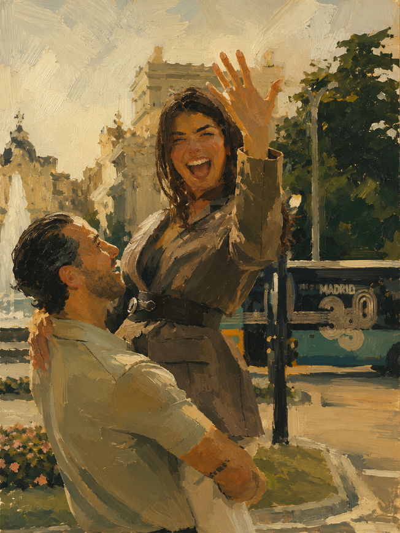

Los Duties
Last but not least…Más que duties, lo que más quiero es tenerlas cerca.
Que me acompañen, y que me ayuden a que el weekend se sienta feliz, fácil y demasiado fun.
Su job principal es simple:
bring the good energy.
Quiero que disfrutemos, que nos tomemos fotos lindas, que me ayuden a mantenerme tranquila, que estemos on time el día de la boda — este sí es serious business.
Y de lo más importante:
que la pista de baile nunca se sienta vacía.
Las quiero presentes, felices, cómodas y listas para darlo todo conmigo.
Cada una tendrá un special duty asignado más adelante, pero don't worry, nada grave. Solo cosas cute para que el día fluya y todas sepamos qué hacer.

FIG 007 — The end.Cualquier detalle extra estará en la webpage que próximamente compartiré con ustedes y todos los invitados.
Hope you enjoyed it y puedan volver al issue cuando necesiten guidance.
Con todo mi amor,
Marce